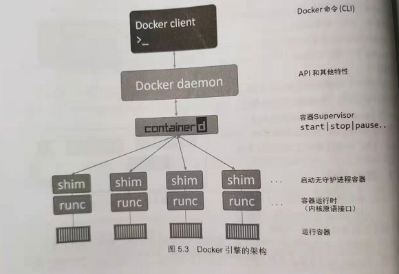
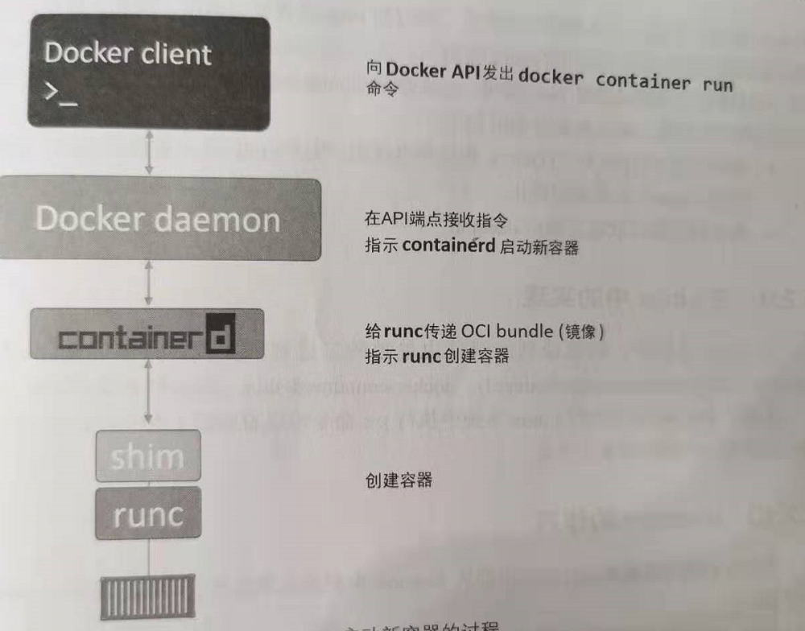
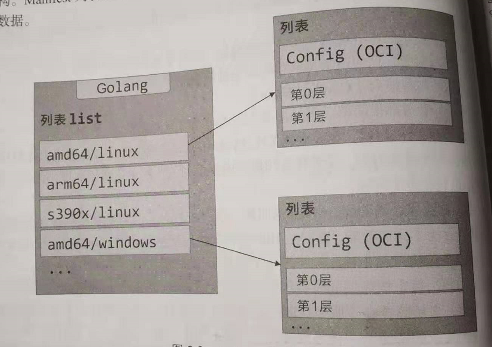

容器发展之路
读《深入浅出Docker》所知，比较偏应用。
简介
Docker引擎是用于运行和编排容器的基础设施工具，是运行容器的核心容器运行时。
OCI（The Open Container Initiative)：是一个旨在对容器基础架构中的基础组件进行标准化的管理委员会。
虚拟机：依赖其专用的操作系统，OS会占用额外的CPU，RAM和存储，并且，每个OS都需要补丁，监控，license等。由虚拟机管理器统一接管操作硬件资源。
容器：容器的运行不会独占操作系统，运行在相同宿主机上的容器是共享一个操作系统，节省大量的资源。
Docker安装
|
|
安装的速度比较慢，国内的网不行。
Docker存储驱动：每个Docker容器都有一个本地存储空间，用来保存层叠的镜像层以及挂载的容器文件系统。默认情况下，容器的所有读写操作都发生在其镜像层上或挂载的文件系统中。可以通过修改/etc/docker/daemon.json文件来修改存储引擎配置，修改完之后重启Dockers才能够生效，Linux默认为overlay2.
默认情况下，对于容器的所有的读写，如果容器实例停止运行，文件都不会保留下来。镜像本身是不会发生变化的。
纵观Docker
Dockers分为Dockers客户端和Docker daemon(服务器或者叫引擎)，docker实现了Docker引擎的API。在Linux中，客户端于daemon之间的通信是通过本地IPC/UNIX Socket完成的（/var/run/docker.sock)
运维视图
镜像包含了基础操作系统，以及应用程序运行所需的代码或依赖包。Docker的每个镜像都有自己的唯一ID，用户可以通过引用镜像的ID或名称来使用镜像。
容器是运行过程中的镜像。
|
|
这里要注意，要删除镜像，要先stop容器，然后再将容器删除掉，才能够删除镜像。
开发视图
docker文件的构建文件是通过Dockerfile来进行定义的
|
|
Docker引擎

daemon:主要功能包括镜像管理，镜像构建，RestAPI，身份验证安全，核心网络以及编排。
containerd:主要的任务是容器的声明周期管理——start|stop|pause|rm,还包括镜像管理等。
runc: 所有的容器运行代码在一个单独的OCI兼容层中实现，runc是OCI容器运行时规范的参考实现，是一个轻量级，针对Libcontainer进行包装的命令行交互工具，生来就只有一个作用——创建容器，是一个独立的容器运行时工具
shim：保证所有STDIN和STDOUT流是开启状态，从而当daemon重启时，容器不会因为管道的关闭而终止，将容器的退出状态反馈给daemon。

启动过程如下所示：
- Docker客户端会将其转换成合适的API格式，并发送到正确的API端点
- Docker daemon接收客户端的命令，向containered发出调用。daemon使用一种CRUD风格的API,通过gPRC与containered进行通信。
- container不负责创建容器，指挥runc去做。containered将Docker镜像转换为OCI Bundle，并让runc基于此创建一个新的容器
- runc与操作系统内核接口进行通讯，基于所有不需要的工具（Namespace，CGroup)来创建容器。容器进程作为runc的子进程启动，启动完毕后，runc将会推出。
优势:将所有的用于启动，管理容器的逻辑和代码从daemon中移除，保证容器运行时与Docker daemon是解耦的，也就是无守护进程的容器
Docker镜像
简介
镜像是一种构建时结构，而容器可以理解为一种运行时结构
一旦容器从镜像启动后，二者之间就变成了相互依赖的关系，并且在镜像上启动的容器全部停止之前，镜像是无法被删除的
镜像不包含内核——容器都是共享所在Docker主机的内核。
Docker客户端的镜像仓库服务是可配置的，默认使用Docker Hub,主要给出镜像的名字和标签，就能够定位到镜像，默认标签为latest。
|
|
没有标签的镜像是悬虚镜像，通常出现这种情况，是因为构建了一个新镜像，然后为该镜像打了一个已经存在的标签。
镜像和分层
Docker镜像由一些松耦合的只读镜像层组成。
Dockers负责堆叠这些镜像层，并且将他们表示为单个统一的对象
每层镜像层都是在原来的基础上加上去。如果对原来的镜像有修改，就会产生镜像层
在拉取镜像的过程，会根据镜像中的镜像层来拉取，如果镜像层已经存在了，不会重复拉取，节省网络。
镜像本身就是一个配置对象，其中包含了镜像层的列表以及一些元数据信息。镜像层才是实际数据存储的地方，镜像的唯一标识是一个加密ID，即配置对象本身的散列值。每个镜像层由一个加密ID区分，其值为镜像层本身内容的散列值。这意味着修改镜像内容以及其中任意的镜像层，都会导致加密散列值的变化，所以，镜像和其镜像层都不可变的，任何改动都能轻松辨别，这就是内容散列。
对于目前要实现跨平台的化，是通过Manifest列表（指某个镜像标签支持的架构列表，其支持的每个架构，都有自己的Manifest定义，其中列出了该镜像的构成）

|
|
删除操作会在当前主机上删除该镜像以及相关的镜像层，如果镜像层被多个镜像共享的化，只有等全部依赖该镜像层的镜像都被删除，才会被释放
Docker容器
容器和虚拟机
共同点：容器和虚拟机都依赖于宿主机才能够运行。Hypervisor是硬件虚拟化，将硬件物理资源划分为虚拟资源，容器是操作系统虚拟化，容器将系统资源划分为虚拟资源
不同点：
虚拟机：在虚拟机模型中，首先会开启物理机，并启动Hypervisor引导程序，一旦Hypervisor启动，就会占用机器上的全部物理资源，然后将这些物理资源划分为虚拟资源，然后将这些资源打包进入虚拟机（VM），并在其中安装系统和应用
容器：在OS层上，需要安装容器引擎，容器引擎可以获取系统资源，接着将资源分割为安全的互相隔离的资源结构
容器
|
|
容器进程：一般情况下，Linux容器进程只有一个，是容器中运行且唯一运行的进程，而且，该进程的PID为1，杀死容器中的主进程，则容器也就会被杀死。
docker container stop命令向容器内的PID 1进程发送了SIGTERM这样的信号，会为进程预留一个优雅停止时间，如果10s内进程没有终止，就会收到SIGKILL信号
应用的容器化
build过程
Dockerfile主要包括两个用途：
- 对当前应用的描述
- 指导Docker完成应用的容器化
|
|
每个Dockerfile文件第一行都是FROM指令，From指令指定的镜像，会作为当前镜像的一个基础镜像层，当前应用的剩余内容会作为新增镜像层添加到基础镜像层之上。
Dockerfile中通过标签（LABLE）方式指定了当前镜像的维护者，每个标签其实是一个键值对，在一个镜像当中可以通过增加标签的方式来为镜像添加自定义元数据。
使用RUN，COPY等都会产生镜像层
通过ENTRYPOINT指令来指定当前镜像的入口程序。ENTRYPOINT指定的配置信息也是通过镜像元数据的形式保存下来的，而不是新增镜像层。
如果指令的作用是向镜像中增加新的文件或者程序，那么这条指令就会新建镜像层；如果只是告诉Docker如何完成构建或者如何运行应用程序，那么就只会增加镜像的元数据
最佳实践
利用构建缓存：首先，一旦有指令在缓存中没有命中，则后续的整个构建过程将不在使用缓存，所以，应该尽量将易于发生变化的指令至于Dockerfile文件的后方执行。这意味着缓存未命中的情况将直到构建的后期才会出现。docker image build --nocache=true
合并镜像：当镜像中层次太多，合并镜像层是不错的优化，不过呢，合并的镜像层将无法共享镜像层。docker image build--squash来创建一个合并的镜像。
使用Docker Compose部署应用
Docker Compose主要解决本地docker容器编排问题
Docker Compose并不是通过脚本和各种冗长的docker命令来将应用组件组织起来，而是通过一个声明式的配置文件描述整个应用，从而使用一条命令完成部署。Docker Compose的作用就是对多容器应用进行部署和管理
|
|
|
|
Docker Swarm
docker-swarm是解决多主机多个容器调度部署得问题，Docker Swarm默认是建立在docker上，但是能够调用docker-compose
作用：Swarm将一个或多个Docker节点组织起来，使得用户能够以集群方式管理他们。Swarm默认内置有加密的分布式集群存储，加密网络，共用TLS，安全集群接入令牌以及简化数字证书管理的PKI。在编排方面，Swarm提供了一套丰富的API来使得部署和管理复杂的微服务应用变得易如反掌，通过将应用定义在声明式配置文件中，使用原生的docker命令完成部署，并有滚动升级，回滚以及扩缩容操作。